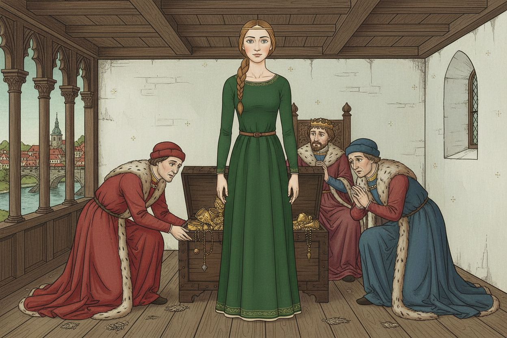
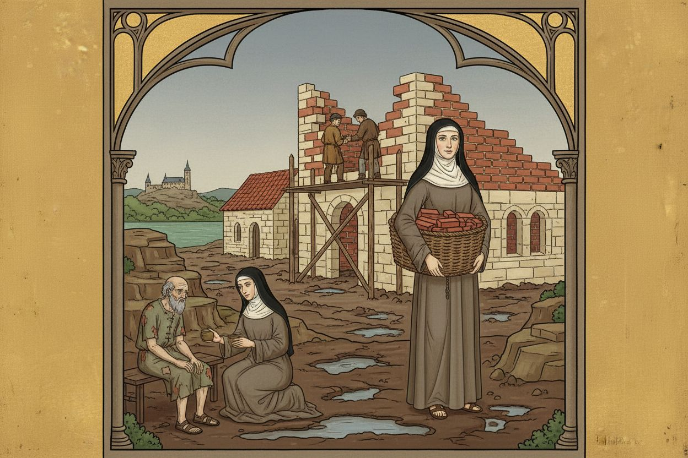
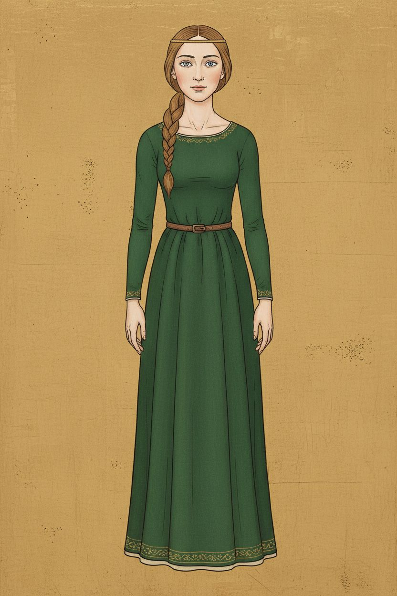
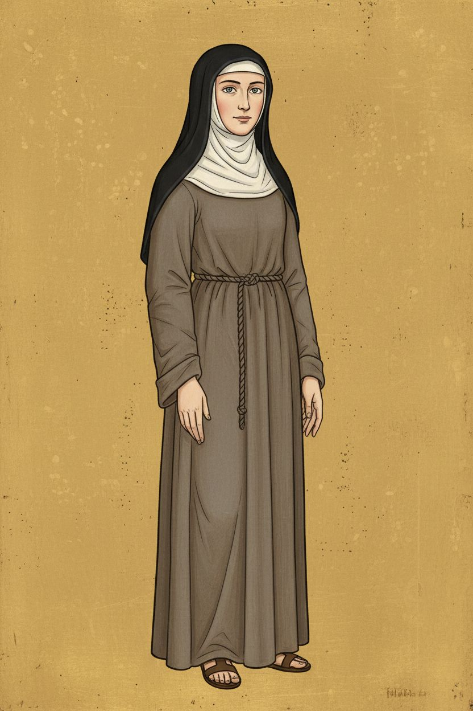

1. The princess who said no
nenamalováno


2. Na Františku
nenamalováno


Postavy v novém stylu




Styl
style: >- Bohemian Gothic panel painting in the manner of the Master of the Vyšší Brod Altarpiece (Prague, c. 1350), adapted as a children's comic illustration. Tempera on wooden panel look: smooth matte surfaces, fine dark brown contour lines, flat areas of pure color with soft modelling only in faces and fabric folds. Burnished gold leaf background with a subtle punched pattern in place of sky. Elongated graceful figures with a gentle S-curve stance, small oval faces, high foreheads, almond eyes, small mouths, calm tender expressions, delicate long-fingered hands. Drapery falls in long looping folds with lighter hems. Architecture is shown as a small open stage: thin columns, pointed arches, red-tiled roofs, slightly tilted perspective, rooms opened toward the viewer. Rocks are stylised terraced ledges and trees are small rounded clusters. No text, no halos on ordinary people, no Renaissance perspective, no photographic lighting, no 3D render look. palette: - '#C9A24A' - '#B63A2B' - '#2F4A8A' - '#4F7A4A' - '#C46A7A' - '#B8873A' - '#7A6A58' - '#EFE6D2' - '#2A1E16' mood: serene, tender, devout, quietly joyful, luminous, storybook-solemn negative: No text, no letters, no words, no watermark. aspect_ratio: '3:2'